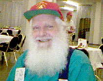

The 139 men on the USS Kingsbury plus two men on the Rockbridge arrived back at Maui No Ka Oi on April 4, 1945. Eighteen additional men had joined in March and were waiting for us at Maui. Immediately we started preparations for the next conflict. Unknown to us, (but not to a few strategic planners) the next conflict for the 4th Marine Division was to be "Operation Downfall" - the invasion of Japan
Actual detailed plans for the invasion of Japan were completed in the spring and summer of 1945 and remained "Top Secret" for over 40 years, buried in the National Archives. We won't go into details of what might have been, except to say that all six Marine divisions plus almost forty Army divisions were to be used. The 1st, 4th, and 6th Marines were scheduled to land on Honshu, Tokyo on March 1, 1946. The other three Marine divisions would have landed in November of 1945 on Kyushu. The expected casualty rate for the Marine Corps was 100 percent! Enough of what might have happened if we didn't drop The Bomb!
During April of 1945, six new men joined us and 21 men rejoined us from various hospitals around the Pacific, giving us 187 men physically present. There were a few transfers and still 21 men "SK - whereabouts unknown". The ranks swelled considerably in May with 69 new men joining and 8 of our previously wounded returned. However, it was not all gain, as 34 men transferred out to various places.
For the record, one "C" Company man (the only one) was court-martialed for "cowardice in battle" and was shipped immediately (May 25th) to the U.S. Naval prison at San Pedro, California where he spent the next five years.
At the end of May we had 248 men including five sick and one in the brig. There were thirteen promotions:
| Platoon Sergeant | Sergeant | Corporal |
|---|---|---|
| Rudy Varoga | Joe Disipio | Bruce Rogers |
| Ed Rajkowski | ||
| James Farrell | ||
| Gene Anderson | ||
| Jim Jeffers | ||
| Roger Gagnon | ||
| John Dodson | ||
| Rich Cooper | ||
| Ken Winland | ||
| Roy Guerry | ||
| Bill O'Loughlin |
We lost numbers in June, 1945 even though we had fifteen new members joining (and one rejoined
from hospital.) Thirty-three men transferred out of the 23rd and twenty men led by Russ Gross transferred into Headquarters
Company to form a battalion "Demolition" platoon. They had trained between Tinian and Iwo for this duty, but were not
transferred until now, to be a separate entity. They played with TNT, satchel charges, and all that good stuff. Russ was named
Squad Leader (and promoted to Sgt. in July) and a Sgt. Charles Britt was the Platoon Sgt. There were thirty plus men in the platoon.
"C" Company wound up in June with a total of 218 men including:
9 Sick
8 Mess Duty
3 Brig
Also in June eleven men received the Purple Heart for Iwo Jima wounds and three men - Rudy Varoga, Henry Hastings, and Pappy Parker were awarded Silver Stars. To say they earned them is definitely an understatement. Henry's citation may be read by clicking here. The other two are not available yet! We are still trying to get copies of all "C" Company award citations.
In July, four Bronze Stars were awarded. Our C.O. "Randy" Randall, Bill McVey, James Skidmore, and Wayne Griggs. Twelve men were promoted to PFC. We wound up with 220 men in July.
Back near the end of Chapter Six I mentioned a Bronze Star being awarded to Darrell S. Cole of "B" Co. "For meritorious achievement against the enemy on Saipan…" I said I'd explain later why I'd listed a "B" Company man.
Darrell was in our 1st Battalion in the early days in N. Carolina. Although I knew him for several years, we were not close friends mainly because it was not practical to have good buddies in other companies, as we rarely trained together except for landing maneuvers. When I first knew him he was a "field mouse" (bugler.) He was promoted to the highest rank possible for a field musician. When we landed on Saipan he took over a squad on the line and as stated in chapter six, was awarded a Bronze Star, and his title was changed to Corporal, then later Sergeant.
Harry Fister and I, both "C" Co., were dating two girls who lived in a boarding house for young ladies in San Diego, near the end of 1943. Darrell also had a girlfriend living at the same home and we occasionally saw him there. One night we arrived at the house and were asked to witness Darrell's wedding in the living room. Harry and I were the only two male witnesses, with 8 to 10 young ladies that were living there. I have forgotten the exact date, but about three weeks later we shipped out of the United States to go to war. Because of the events described in the paragraph below, Darrell never got back to the United States!
Cole, Darrell Samuel
Rank and organization: Sergeant, U. S. Marine Corps Reserve.
Born 20 July 1920, Flat River Mo. Entered service at Esther, Mo.
Other Navy award: Bronze Star Medal.
Citation: [for Congressional Medal of Honor]
For conspicuous gallantry and intrepidity at the risk of his life above and beyond the call of duty while serving as leader of a Machinegun Section of Company B, 1st Battalion, 23rd Marine Division, in action against the enemy Japanese forces during the assault on Iwo Jima in the Volcano Islands, 19 February 1945. Assailed by a tremendous volume of small-arms, mortar and artillery fire as he advanced with 1 squad of his section in the initial assault wave, Sgt. Cole boldly led his men up the sloping beach toward Airfield No. 1 despite the blanketing curtain of flying shrapnel and, personally destroying with hand grenades 2 hostile emplacements which menaced the progress of his unit, continued to move forward until a merciless barrage of fire emanating from 3 Japanese pillboxes halted the advance. Instantly placing his 1 remaining machinegun in action, he delivered a shattering fusillade and succeeded in silencing the nearest and most threatening emplacement before his weapon jammed and the enemy, reopening fire with knee mortars and grenades, pinned down his unit for the second time. Shrewdly gauging the tactical situation and evolving a daring plan of counterattack, Sgt. Cole, armed solely with a pistol and 1 grenade, coolly advanced alone to the hostile pillboxes. Hurling his 1 grenade at the enemy in sudden, swift attack, he quickly withdrew, returned to his own lines for additional grenades and again advanced, attacked, and withdrew. With enemy guns still active, he ran the gauntlet of slashing fire a third time to complete the total destruction of the Japanese strong point and the annihilation of the defending garrison in this final assault. Although instantly killed by an enemy grenade as he returned to his squad, Sgt. Cole had eliminated a formidable Japanese position, thereby enabling his company to storm the remaining fortifications, continue the advance, and seize the objective, By his dauntless initiative, unfaltering courage, and indomitable determination during a critical period of action, Sgt. Coles served as an inspiration to his comrades, and his stouthearted leadership in the face of almost certain death sustained and enhanced the highest tradition of the U. S. Naval Service. He gallantly gave his life for his country.
The above is not quite the end of the story. Medal of Honor recipients usually have a Naval vessel named after them, but it sometimes takes a little time. Darrell finally got a ship named after him and his honors and medals are "stepped in the mast." Readers of this know the ship was named The USS COLE. 17 persons lost their lives when the USS (Darrell S.) COLE was sabotaged in the Arabian Gulf on 12 Oct 2000. It is now back in service.
There was a net gain of fourteen men in August - (twenty-seven newly joined and thirteen transferred out) to 234. August was another awards month, with fifteen men receiving Letters of Commendation from the Commanding General. Twenty-seven men were promoted to PFC.
August was the month that THE BOMB was dropped. The word reached us while we were in the "boonies", and did not cause much excitement at the time. The veterans of our battles had long ago come to the conclusion that the war would end only when we had killed every single Japanese. Even weeks later, when "surrender" was being sought, we did not think it could possibly come about. We knew the tenacity of the Enemy! Thank God for Harry Truman's decision and follow-through!
September brought a flurry of activity but no real change n strength. A
First Sgt. Abernathy was transferred into "C" Company as our new First Sgt., replacing our old-timer Gordon Kraft,
who was promoted to and became our First Battalion Sgt. Major. Wow! - Corporal to Sgt. Major in 39 months!
September was also promotion month. In addition to Gordon Kraft the following were promoted:
Platoon Sgt. - Bob Hauser
Field Cook - Bob Gussner
Sgt. - Roy Mason
Asst. Cook - Mike Demytrshak
Corporals:
Wayne Griggs
Grove Havener
Nick Mosura
Eric Leeworth
Peter Lindstrom
Richard Nash
Frank Nellbaur
Thirteen men made PFC.
As the feeling grew that Japan was really going to surrender, the entire subject of conversation became the "point" system which was to be used for priorities to (-was it a dream?) go home! I really can't remember (help!) the details of the system or how many points you needed to return, but we all knew that anyone left in "C" Company that had left the states with us in January 1944 would have enough points from our time overseas in battles. Points were also given for dependants, etc
It really was true! A lot of us would be going home! October became the month to prepare.. Since the Fourth Marine Division itself was to be dissolved there had to be a lot of troop movements. Fifteen men were returned to "C" Co. that had been transferred out to other Pacific bases because of wounds, or for geographic reasons - some as long ago as fifteen months. They had their points and trannsferred back to us to go home.
Since C-1-23 would be dissolved, the men who did not have enough points had to be
transferred out. The numbers looked like this at the end of October:
37 - transferred to 8th MP BN (Prov) FMF, PAC
3 - transferred to 4th Sep HQ & serv BN (Prov) FMF, PAC
4 - transferred to 18th Serv Ser Com'd, FMF, PAC
1 - transferred to 1st AMPHIB TRAC Group FMF, PAC
45 - transferred to Replacement Draft B, FMF, PAC
45 - transferred to Replacement Draft A, FMF, PAC
5 - transferred to HQ, Ser Com'd , FMF, PAC
10 - transferred to 7th MP BN (Prov), FMF, PAC
2 - transferred to 9th MP BN (Prov), FMF, PAC
The balance was 102 men eligible to return to the U.S. On October 25, 1945, we boarded the carrier (CVE) Rudyard Bay. Fifty-eight of these 102 had left the USA in January 1944 as C-1-23. The remaining 44 men had earned their points in other units and joined us after fighting in other combat units or divisions, or had accumulated points for other reasons.
John Fiske and John Riley both joined us during the Iwo Jima battle and both survived. Actually, two John Rileys joined us in the same day. The other, John M. Riley was wounded in action on March 3, and died on March 5. Another sad entry to statistics. No one remembers John M. Riley. (Another similar sad case occurred with Derald Fisher on Tinian. Click on his last name to see a chronology of his days with Company C).
Our John Fiske and the surviving John Riley were friends. One day, back on Maui after the Iwo campaign, John Riley thought he would try drinking lighter fluid. (Booze was scarce.) He took a swig and then wanted a cigarette to take the taste away. "The fumes went Poof! - and John had one scorched face!"
Back on Maui I was assigned a BAR. I really got to know the weapon and like it. One day in the field a tracer started a fire in some bamboo across a ravine. We fought it with utility jackets, our boots, and a few entrenching tools for almost two hours before better equipped help arrived. We got to ride back in the trucks that brought the help instead of marching.
We were on a training exercise on Maui, when word was received that Japan had surrendered. We got an extra hour for lunch, but worked until midnight instead of ending the exercise at 2200. It was seven miles to the nearest town. "The Brass " didn't want anybody making it to town and getting drunk.
Written by John Seymour
Word Processing by Joline Doersam
Input by various former Company C members
Maintained on web site by Rowland Lewis
Last Modified 01/17/2006